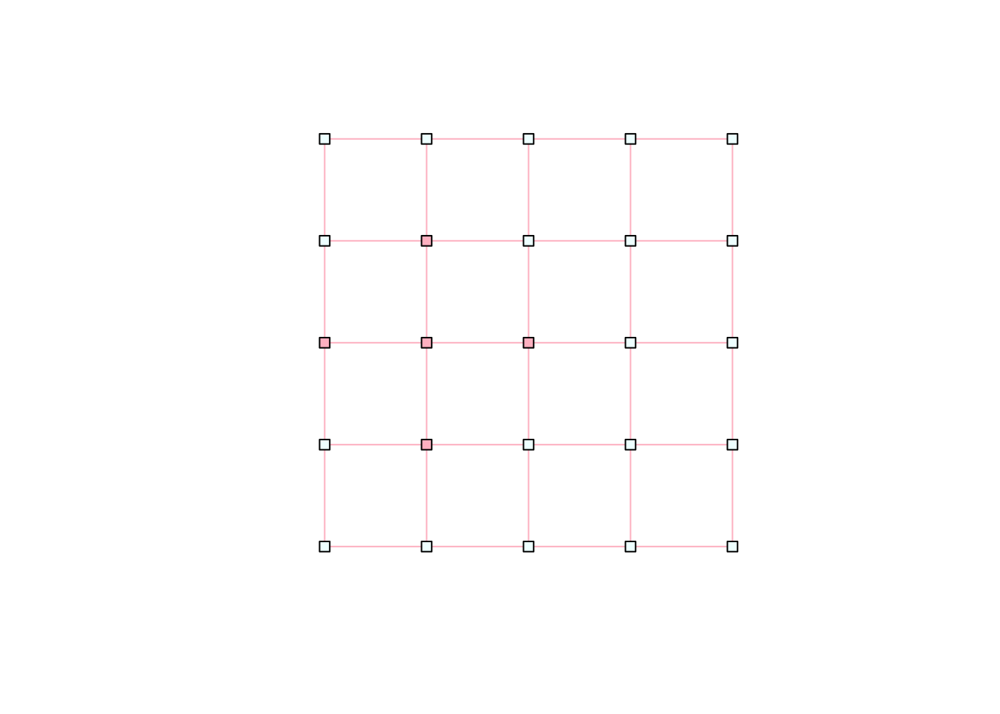
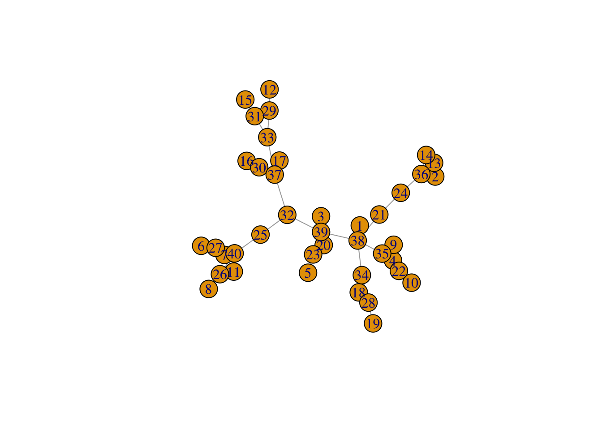
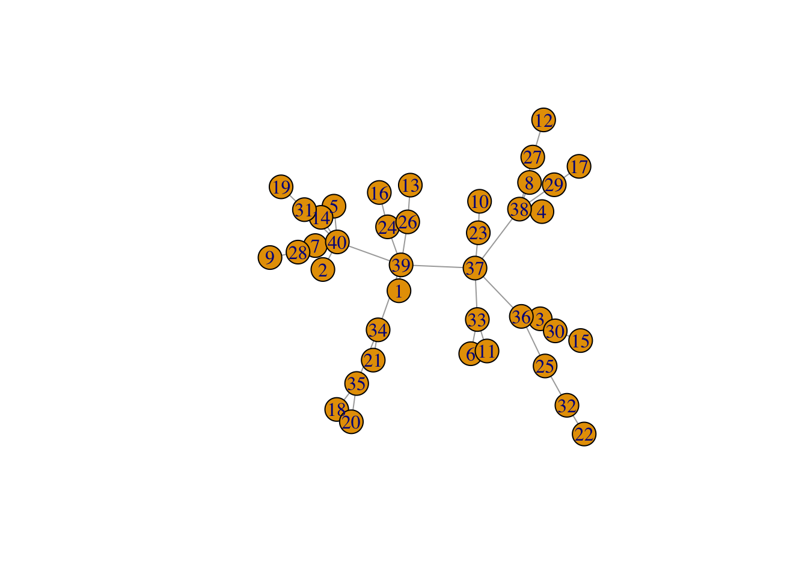
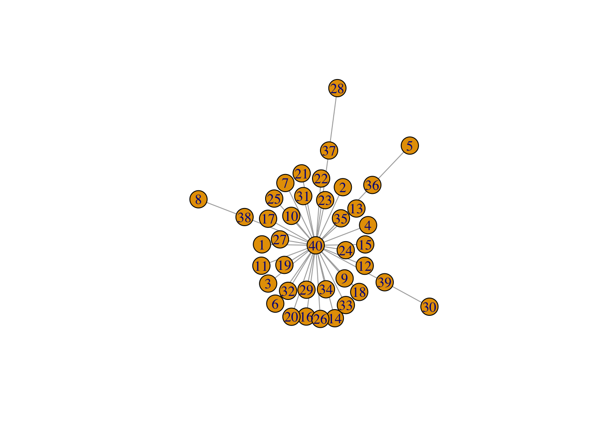
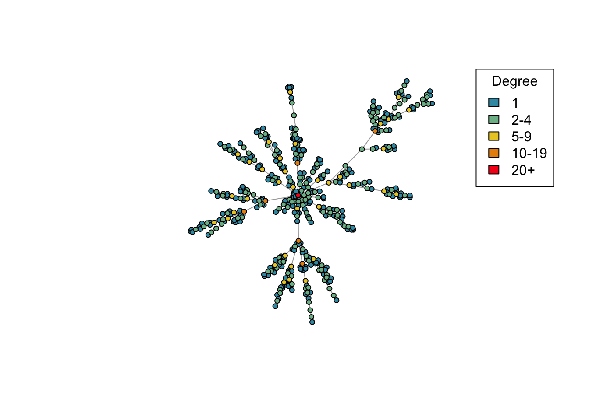
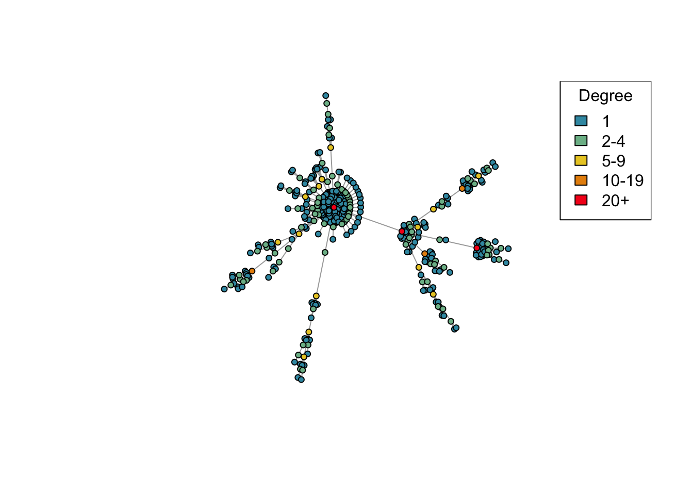
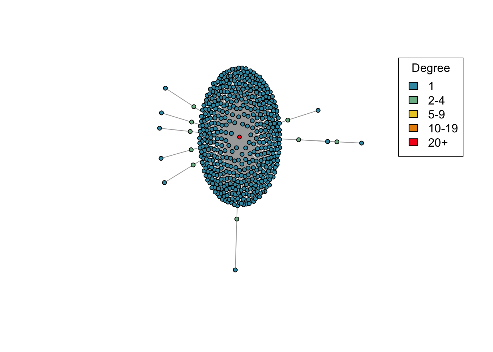
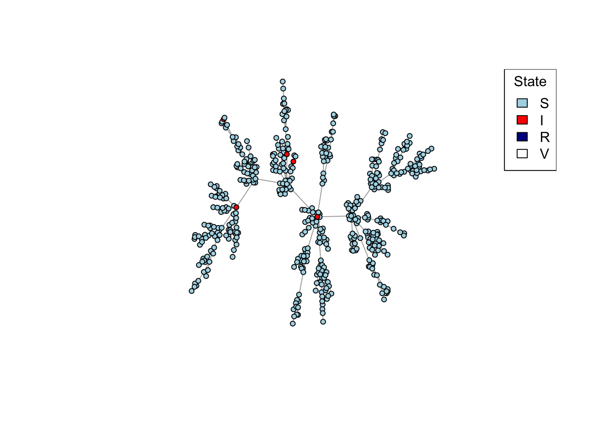
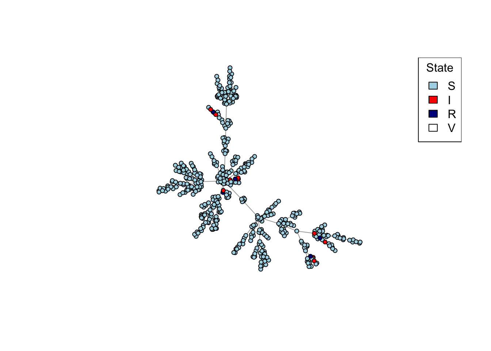

Other random graphs: The “small-world” model by Watts and Strogatz, where there are connections between neighbours, some of which are randomly rewired:
The “preferential attachment” model by Barabási and Albert, which is built by adding nodes one at a time, and each time a node is added, it is connected to other nodes, where the connection is more likely to be made to a node that already has more connections (a “rich get richer” dynamic).
Some simple calculations: vcount() or ecount() give the number of vertices or edges in the graph; degree() gives the number of neighbours of each vertex.
Question (3): What is the code above? What happens if you re-run the last two lines above several times? Answer: Change the colors of vertices neighboring a pink vertex to pink. The number of pink points in this network gradually increase.
Other interesting attributes for vertices include:
V(network)$label <-NA# text label for the vertices (set to NA for no labels)V(network)$size <-5# size of vertex markersV(network)$shape <-"square"# shape of markersplot(network)

# See ?igraph.plotting for more.
Bonus: Code a network model
Here is one possible way of doing it…
network <-make_lattice(c(5, 5))
Set all vertices to “susceptible” except for one “infected”
V(network)$state <-"S"V(network)[1]$state <-"I"# Pick plotting colourscolours <-c(S ="lightblue", I ="red", R ="pink")# Print and loop through time stepst_max <-10for (t in1:t_max){# Plot networkplot(network, vertex.color = colours[V(network)$state], layout = layout_on_grid,main =paste("t = ", t))# Pause so we can see animationSys.sleep(1.0)# Find "infector" vertices infectors <-V(network)[state =="I"]# Infect susceptible neighbours of infectorsV(network)[.nei(infectors) & state =="S"]$state <-"I"# Recover infectorsV(network)[infectors]$state <-"R"}
Set up a transmission network of n nodes by preferential attachment with affinity proportional to degree^m.
create_network <-function(n, d, layout = layout_nicely){# Create the network by preferential attachment, # passing on the parameters n and power network <-sample_pa(n, d, directed =FALSE)# Add the "state" attribute to the vertices of #the network, which can be "S", "I", "R", or "V". # Start out everyone as susceptible ...V(network)$state <-"S"# ... except make 5 random individuals infectious.V(network)$state[sample(vcount(network), 5, prob =degree(network))] <-"I"# Reorder vertices so they go in order from least to most connected. This# is to help with degree-targeted vaccination, and also to make the # most connected vertices plot on top so they don't get hidden. network <-permute(network, rank(degree(network), ties.method ="first"))# Set the network layout so it doesn't change every time it's plotted. network$layout <-layout(network)return (network)}## See how the parameter d to create_network changes the network structurenet <-create_network(40, 0)plot(net)

net <-create_network(40, 1)plot(net)

net <-create_network(40, 2)plot(net)

Question (1): Try varying the d parameter for create_network between 0 and 2. What changes about the network?
Answer: All vertices are increasingly connected through the same vertex.
Plot a network, highlighting the degree of each node by different colours.
plot_degree <-function(network){# Set up palette colors <-hcl.colors(5, "Zissou 1")# Classify nodes by degree deg <-cut(degree(network), breaks =c(1, 2, 5, 10, 20, Inf),labels =c("1", "2-4", "5-9", "10-19", "20+"),include.lowest =TRUE, right =FALSE)# Plot networkplot(network, vertex.color = colors[deg],vertex.label =NA,vertex.size =4)legend("topright", levels(deg), fill = colors, title ="Degree")}## Look at the degree distribution plotted for different values of dnet <-create_network(500, 1)plot_degree(net)

net <-create_network(500, 1.5)plot_degree(net)

net <-create_network(500, 2)plot_degree(net)

Question (2): This time we’ve created a network with 500 nodes. Try varying the d parameter again and plotting the generated networks. Are the results similar to what you saw before with 40 nodes?
Answer: Yes.
Plot a network, colouring by state (S/I/R/V).
plot_state <-function(network){# Set up palette colors <-c(S ="lightblue", I ="red", R ="darkblue", V ="white")# Plot networkplot(network, vertex.color = colors[V(network)$state], vertex.label =NA,vertex.size =4)legend("topright", names(colors), fill = colors, title ="State")}## Test the plot_state functionnet <-create_network(500, 1)plot_state(net)

2. Running the model
Enact one step of the network model: infectious individuals infect susceptible neighbours with probability \(p\), and recover after one time step.
network_step <-function(net, p){# Identify all susceptible neighbours of infectious individuals, # who are "at risk" of infection at_risk <-V(net)[state =="S"&.nei(state =="I")]# Use the transmission probability to select who gets exposed from# among those at risk exposed <- at_risk[runif(length(at_risk)) < p]# All currently infectious individuals will recoverV(net)[state =="I"]$state <-"R"# All exposed individuals become infectiousV(net)[exposed]$state <-"I"return (net)}net <-create_network(500, 1)net <-network_step(net, p =0.8)plot_state(net)

Question (3): After creating your network with the first line above, run the last two lines repeatedly to watch the network model evolve.
Run the transmission model on the network with maximum simulation time t_max
and transmission probability p; plot the network as the model is running if animate = TRUE.
run_model <-function(net, t_max, p, animate =FALSE){# Plot network degreeif (animate) {plot_degree(net)mtext("Network created")Sys.sleep(2.0) }# Set up results dt <-list()# Iterate over each time stepfor (t in0:t_max) {# Store results dt[[length(dt) +1]] <-data.table(S =sum(V(net)$state =="S"),I =sum(V(net)$state =="I"),R =sum(V(net)$state =="R"),V =sum(V(net)$state =="V") )# Plot current stateif (animate) {Sys.sleep(0.5)plot_state(net)mtext(paste0("t = ", t)) }# Stop early if no infectious individuals are leftif (!any(V(net)$state =="I")) {break; }# Run one step of the network model net <-network_step(net, p) }# Return results, including empirical calculation of Rt results <-rbindlist(dt, idcol ="t") results$Rt <- results$I /shift(results$I, 1) # new infections per new infection last time stepreturn (results)}
Run an example simulation
net <-create_network(500, 2)res <-run_model(net, 100, 0.8, TRUE)
Question (4): How does the preferential attachment parameter (create_network parameter d) affect the final outbreak size?
Answer: changing d from 1 to 2 increase the outbreak size, changing d from 2 to 4 doesn’t change the outbreak sizes by much.
Bonus: vaccination and multiple runs
Vaccinate a fraction v of the nodes in the network. The parameter k, between -1 and 1, determines the association between network degree and vaccination.
vaccinate_network <-function(network, v, k){# Count total population (n) and number to vaccinate (nv) n <-vcount(network) nv <-rbinom(1, n, v)# If k > 0, vaccinate the nv most-connected individuals; if k <= 0, # vaccinate the nv least-connected individuals.if (k >0) { target <- (n - nv +1):n } else { target <-1:nv }V(network)[target]$state <-"V"# Now randomly shuffle the state of a fraction 1 - abs(k) of individuals. shuffle <-which(rbinom(n, 1, 1-abs(k)) ==1)V(network)[shuffle]$state <-sample(V(network)[shuffle]$state)return (network)}
Run the model nsim times with parameters in params (n, d, v, k, t_max, p), showing the animated network the first nanim times, and returning a data.table with the results of each simulation.